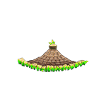

Получено: файл; исходный URL. Файл без перекодирования с альтернативного хоста; побайтовое совпадение оригинальной ссылки не проверено. Страница: источник.


Деталь №3 водного канала
историческая браузерная социальная игра; платформа и редакция уточняются- Тип
- Декорация канала
- Покупка
- нет данных
- Продажа
- нет данных
- Как получить
- нет данных
- Применение
- нет данных
- Особенности
- нет данных
- Версия и дата
- историческая браузерная социальная игра; платформа и редакция уточняются
Данные по источнику · браузерная социальная игра; платформа не уточнена · 02.08.2014 — дата статьи, дальнейшие правки не датированы
Предварительно: Фанатский источник; возможны ошибки и отличия исторических версий.. Требуется сверка.
- Создание
- В Тереме на Солнечном острове: 10 чёрных сердец + 10 Сонных качанов. Купить и продать нельзя.
- Применение
- Соединительные элементы водного канала; задача «Фонтан молодости» требует канал через все мостики. По новости для решения использовалось по 8 деталей каждого типа №3–№6. Размещение зависит от схемы.
Связанные сущности
- Терем — Солнечный остров — создаваемая деталь